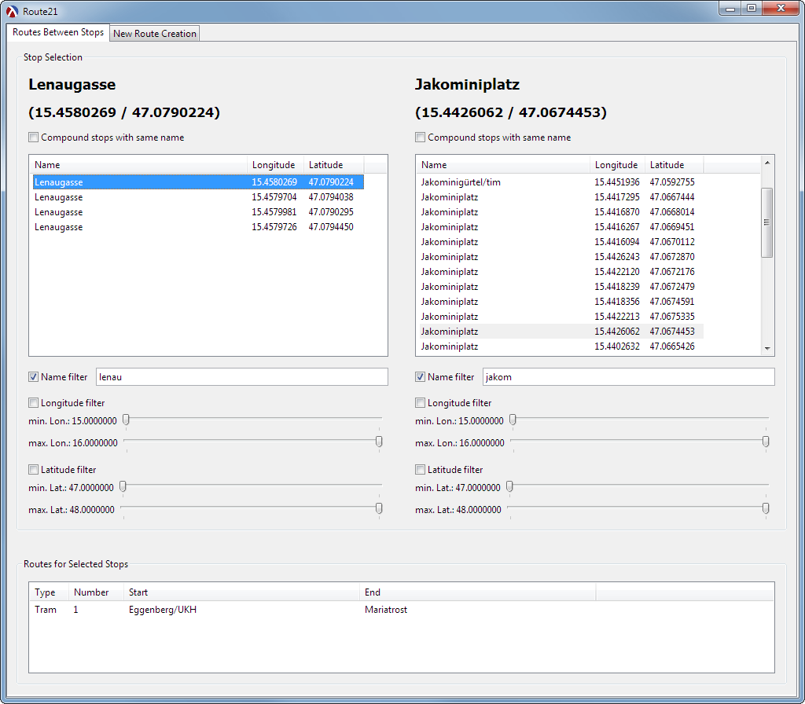

route21 GUI Application
An application that displays two tabs for displaying and manipulating route data:
Routes Between Stops: displays routes which directly connect the selected stops.
New Route Creation: allows creation of new routes between two or more stops.

1 Top-Level Implementation
Tasks of main application:
setup of centrally provided data-provider<%> via module data-provider-factory
setup of gui main window
setup of tabbed pane with two tabs and placement of respective controls (info-panel and edit-panel)
1.1 Setup of Data Provider
<provider-setup> ::=
(define provider (data-provider))
1.2 Setup of Main Window
(define main-frame (new (class frame% (super-new [label "Route21"] [width 1000] [height 800]) (define/augment (on-close) (when (exit:user-oks-exit) (exit:exit))))))
1.3 Setup of Tabbed Pane
tab-panel% only provides the tabs, but not the actual switching
so setup of two panels which host the respective controls
unneeded panel is removed as panel child (and thus hidden)
<tab-pane-setup> ::=
(define tab-panel (new tab-panel% [parent main-frame] [choices '("Routes Between Stops" "New Route Creation")] [callback (lambda (panel event) (let ([active-tab (if (equal? 0 (send panel get-selection)) info-tab edit-tab)]) (send panel change-children (lambda (children) (list active-tab)))))])) (define info-tab (new vertical-panel% [parent tab-panel] [border 10])) (define info-panel (new info-panel% [parent info-tab] [provider provider])) (define edit-tab (new vertical-panel% [parent tab-panel] [border 10])) (define edit-panel (new edit-panel% [parent edit-tab] [provider provider])) (send tab-panel delete-child edit-tab)
2 File Structure
<*> ::=
<requires> <provider-setup> <main-window-setup> <tab-pane-setup> (send main-frame maximize #t) (send main-frame show #t)
2.1 Required Imports
<requires> ::=